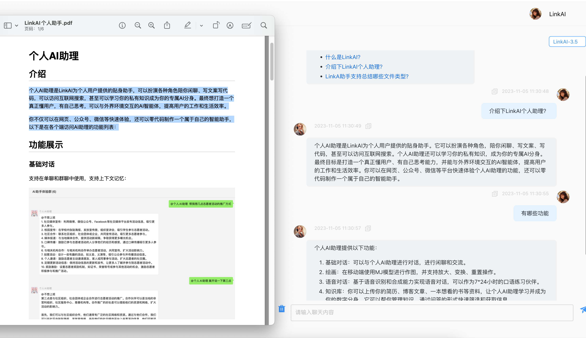

LinkAI 快问快答：一款把 AI 接到所有渠道的应用平台
LinkAI 是什么、谁适合用、怎么装、核心功能、渠道接入、调试技巧、收费情况、和同类平台对比——这篇快问快答帮你在十分钟内摸清底细。
整理一篇关于 LinkAI 的快问快答，把大家最常问的几个问题一次性说清楚。
LinkAI 到底是什么？
LinkAI 是一款AI 应用构建与多渠道分发平台。简单说，你把私有知识喂给它、选一个模型、写一段提示词，就能生成一个能对话的 AI 应用——然后把这个应用同时接到微信公众号、企微、飞书、钉钉、Discord、Telegram、WhatsApp 等各种渠道，所有渠道共享同一套知识库和配置，后台统一管理。它的官网对这套架构的说法是「一套后端、多端触达」。
它下面有几个定位不同的子产品：Builder 用来搭工作流、Agent 做智能体、MaaS 是模型服务、Studio 是给内容团队用的无限画布创作空间——但大部分人接触到的核心还是「知识库 + 应用 + 渠道接入」这条主线。
谁适合用 LinkAI？
有三类人用它最对口。第一类是有私有知识要对外提供问答服务的——比如企业内部做了一份产品手册，想让销售和客服随时能查到，或者想让公众号粉丝直接问产品细节。第二类是想做 AI 客服的——特别是有海外客户的，WhatsApp 和 Telegram 接入是 LinkAI 的强项。第三类是把 AI 当内容生产工具的——Studio 无限画布那句「帮我写一条运动鞋新品视频」就能自动生文案、分镜图、视频、配音，对短视频团队来说省了不少工序。
如果你只是调个模型 API 跑点简单推理，MaaS 那层直接用豆包或 DeepSeek 就行，LinkAI 这套完整平台对你来说偏重了。
怎么装和注册？
桌面客户端从官方下载拿，装好之后用手机号或邮箱注册就能进控制台。手机端目前是网页 PWA 形式，浏览器访问控制台网址后可以「添加到主屏幕」，体验接近原生 App。企业部署也支持私有化，需要联系官方。
第一次进来建议先跑官方的新手引导：三步创建一个知识库（上传文档）、创建一个应用（绑定知识库 + 写提示词）、调试对话——走一遍你就对整个产品逻辑有感觉了。
最核心的功能是啥？
知识库和应用是两个最核心的概念，搞清楚这俩就入门了。知识库负责「喂知识」，支持上传 Markdown、PDF、Word、网页链接、数据库表等多种源，上传时自动做语义分块和向量化存储。应用负责「用知识」——你给应用写一段提示词（叫「应用设定」）、选一个模型、绑一个知识库，应用就变成了一个能基于私有知识回答的 AI 助手。
应用创建好之后有一个唯一的对话链接，直接发给别人就能用。如果想让更多人用，就接到渠道里——这才是 LinkAI 真正的差异点。
渠道接入怎么玩？
LinkAI 支持的渠道分两大类：国内微信生态（公众号、企微机器人、微信客服）和海外协同平台（飞书、钉钉、Slack、Discord、Telegram、WhatsApp、HubSpot），还有 AI 硬件接入和 Open API。
国内场景最常用的组合是「公众号 + 企微机器人」双接：公众号做公域引流，用户扫码进来问产品问题，AI 自动答；企微机器人做内部办公，员工 @ 机器人就能查知识库、跑数据、安排日程。海外客户服务推荐 WhatsApp + Telegram Bot 组合，支持多语言自动回复。

一个智能体可以同时挂多个渠道——同一个知识库应用，既能在公众号里跑、又能接到企微、还能做 WhatsApp 自动客服，所有渠道共享同一套知识和配置，后台统一看数据，这点 LinkAI 做得比其他单点接入的工具要干净得多。
调试对话效果有什么技巧？
这是 LinkAI 里最容易踩坑的环节。创建好应用和知识库之后，一定要进「调试页面」打磨效果再发出去——直接上线大概率会遇到「AI 答非所问」「编造信息」「每次都套话」这几种典型问题。具体配置步骤可以翻它的文档。
提示词（应用设定）是效果好坏的第一决定因素。推荐写四个部分：角色定位、知识来源（明确「知识库优先、不知道就说不知道」）、回复风格（指定用列表或表格能显著提升可读性）、禁止事项。不加「不知道就说不知道」这一条，AI 一定会幻觉。知识库检索测试也是独立的一环——如果检索就召回不准，那不是模型的锅，是文档拆分粒度或检索策略的问题，单独调整就行。
有没有收费门槛？和同类平台比怎么样？
定价分几个版本，基础版免费，跑通流程够用；标准版和专业版可以接入豆包、DeepSeek、Claude、GPT 等更多主流模型，渠道接入也需要标准版以上。个人微信接入走的是开源社区项目，不算在官方托管服务里。
和同类比的话，LinkAI 的优势主要在渠道覆盖的完整性——从微信生态到海外协同平台到 AI 硬件，一条线全打通了，其他竞品要么只做国内要么只做海外，很少有两边都做的。另外它的工作台设计对非技术人员比较友好，不需要写代码就能把知识库应用搭起来。如果你只做单一渠道的 AI 客服，其他更轻量的工具可能更经济，但需要多渠道分发的话 LinkAI 几乎是目前最省运维的选择。
写这篇东西的时候顺手把 LinkAI 的资料也整理了一份，三个仓库都能拿到：GitHub、Gitee、GitCode，国内访问卡壳的时候换一个就行。
最后一句：有私有知识要对外做 AI 问答、或需要在多个渠道同时跑 AI 应用，LinkAI 是目前把这条链路走得最完整的一款——先注册免费版跑一遍新手引导，觉得好用再升也来得及。